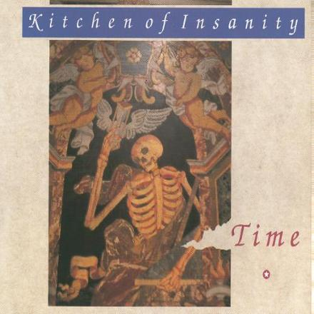

|
|
After their triumphant march through the competition, it is time to step things up. Main rivals Noordkaap and Gorky went on to release their debut singles, logically the next thing to do. Kitchen of Insanity has other plans, though. They soon find themselves in the company of producer Pino Guarraci who takes the group into Studio 8 that summer, far sooner than expected. Looking back, Pino was the right man for the job; his production work on both albums is of an outstanding quality. A very interesting thing about Pino was that he was blind, a fact that may be a huge bonus for someone who makes a living out of listening to and shaping sounds and music.
By that time, the band had already teamed up with Ludwig Vandenbruel who, besides starting out as the band's manager, launched his independent label Manifesto Records as a vehicle for the Kitchen's grand voyage. The band chose to set sail on this tiny newborn instead of signing to one of the major labels that had approached them. Well aware of the fact that they were going for the rough ride, the group prefer the dirt path because they're unwilling to start making compromises and giving into whatever is the will of a major label boss.
Being the young upstarts, the band is forced to cut back studio time to an absolute minimum and these financial restrains also set them apart from doing anything special: no tapes, no special effects, no endless mixing,... But this very basic way of recording brings out the best within themselves and the sessions are very productive. In less than one week, the Kitchen, together with Guarraci, finish work on their debut album. Stuffed with the songs already in the hearts of the many that followed the band during the Rock Rally proceedings, Dreamaway Sunday, released in September 1990, is an immediate hit. The local and underground press love it; they are attracted to the band like a moth to a flame, finding the group's spokesman in Paul De Borger:

So far, so good. But not
all was the way it could or should be. The main pebble on the
track that set back Kitchen of Insanity from start to finish was the radio. They
were never granted the airplay they so deserved, for whatever
reasons. But the one aspect that comes to mind first is the harsh
fact that in Belgium, during the early 1990's at least, the
record buying public would prefer to hear music in their own
language, being Dutch. Also, the music and lyrics seems tough to
swallow for the pop-loving, sing-along mainstream; preferring the
easy going sounds and graspable lyrical contents of media driven
popular bands. These contemporaries all fly high in their own
right and riding the top of the charts but none of them had a
message as clear and important as the Kitchen; with an output
well rooted in cultural and musical history.
So it was a matter of being in the wrong spot at the wrong time
and radio stations realised that, sticking to whatever their
listeners would prefer. This aspect was also projected upon the
attitude of the major newspapers and magazines, most of them
neglecting to look into the band and giving them the attention so
very much needed by a young upcoming band.
Not too long after Dreamaway Sunday saw the light of day, a mini CD is released in an attempt to score a first hit single. A slightly different version of the classic Time takes on the role of Trojan horse, backed by two album outtakes and further remixes. If I was to pick one song that could or should have made it onto the radio big time, it would be Time for sure. What Light My Fire is to The Doors, Satisfaction to The Stones, Stairway To Heaven to Led Zeppelin, Time is to the Kitchen of Insanity. Making its appearance at almost every live show, it's the band's anthem and to many a favourite.

| background music: This City (Dreamaway Sunday) |